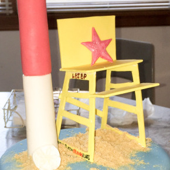

The Old Barney Lighthouse Cake
In the spirit of my love for NJ and the island I call home, I wanted to share my favorite cake to date.
Here’s the story:
My brother’s girlfriend texted me one morning and all sorts of crazy thoughts popped into my head… is she pregnant, is my brother in a hospital somewhere (again) for supermanning over his bike into the pavement, did she hate my pink hair, are they engaged or eloping… I’m a worrier, yet romantic optimist. Nope, none of the above. Tess just wanted to know if I’d be interested in making a Long Beach Island themed cake for her family as a surprise to their parents for buying their beach house. Was I interested? Heck ya, I was!
So off I went to make this cake, and I can assure you that it went anything but easy. In my giddy haste, I messed up about every aspect of this cake. Seriously an accident in the baking. I didn’t do my math right TWICE (once with the cake and once with the buttercream) but that gave my cousin, Ellie, and me some goodies to eat. Finally, I got the basics down and was down to the nitty gritty, and my favorite part, the decorations. I promised Tess that I would give her something along these lines:

I needed to perfect each of these items, not only because my brother’s girlfriend’s family would be judging me (they have a very large, fun family) and would disown my brother forever if it was horrible, but I had to do right by the island. In my mind, every mistake I made for each component was a sign of disrespect towards the island I grew up on….no pressure.
Essentially, I sketched out how I would execute each element. Initially, I thought Barnegat Lighthouse was going to be the biggest pain, but I was wrong. I cut the pieces of the lifeguard stand a little two thin for my liking, so they were a bit (a lot of a bit) too delicate when dried. Seriously, I tried everything to get that thing together…

The ocean waves and birds were colored on with different colors of food coloring gel. I was pretty happy with them in the end.
The only thing about this cake that I absolutely did not like was the sign. It was a brainless move by me, but I decided I would paint the sign (in the form of a Garden State Parkway street sign) with food coloring instead of color the gumpaste… big, big mistake. It came out pretty darn awful, and then I couldn’t get as detailed as I wanted to with the sign. But I didn’t have enough time to make another one so it went on.
But in the end, and thankfully without any more brainless mistakes made by me, I think it came out pretty spiffy. I mean, I got the colors of Ol’ Barney right, so there’s that.